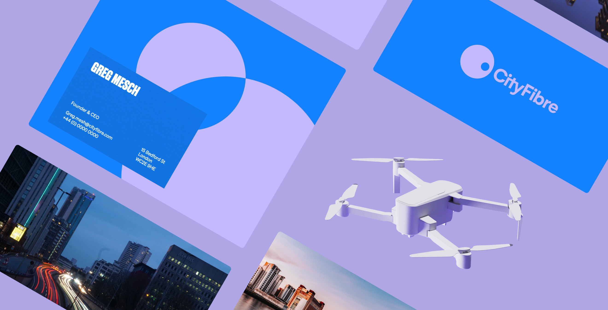
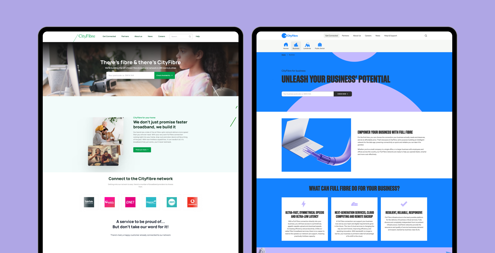

The problem
CityFibre’s new brand identity needed to work across several digital experiences. The marketing website helped visitors explore its fibre network and check availability. The B2B portal supported business users with tasks including dashboards and incident management.
On the homepage, Mouseflow recordings showed visitors scrolling towards animated imagery below the hero and past the postcode checker. The page was drawing attention away from the action people needed to take to check availability at their address.
The redesign needed to carry the new brand while giving that task a clearer focus.
Role and team
I was the lead designer for CityFibre at DawsonAndrews. A separate branding agency created the identity; I adapted it for the website, B2B portal, campaign landing pages and emails.
I built the Figma design system and implementation documentation, working directly with three front-end developers, a larger back-end team, a project manager and the branding agency.
My work also included making the brand accessible in digital interfaces and running a post-launch feedback workshop with portal users.

Key decisions
Put the availability check at the centre of the opening screen.
The existing homepage used a short hero, with animated content below it. Session recordings suggested that the movement was pulling visitors further down the page before they used the checker.
I gave the checker the full opening screen and moved the animated brand treatment into its background. The input stayed static, with the animation around it. The aim was to make the availability check easier to notice while preserving the character of the new identity.
Before
Animation below the hero drew attention past the checker.
Animated imagery
Draws the scroll
After
A larger hero brought the animation and checker together.

Adapt the identity for interface use.
The brand needed to work in text, controls and reusable components across multiple products.
I recommended changes to colour combinations to meet AA contrast requirements and adjusted text size and weight for readability.
Connect the design system to how developers built the product.
The work spanned several experiences, so developers needed consistent guidance they could reuse.
I structured the design system around their Tailwind setup and improved the implementation documentation. This connected the components in Figma with the patterns developers used in code.
Design changes
| Improvement | Change | Benefit |
|---|---|---|
| Prominent postcode checker | Gave the availability check the full opening screen. | Made the central task easier to notice. |
| Brand movement around the task | Placed animated imagery around a static postcode input. | Brought the visual interest and the availability check into the same area. |
| Accessible brand application | Adjusted colour combinations and typography. | Improved contrast and readability across digital interfaces. |
| Tailwind-aligned system | Created reusable components and implementation guidance aligned with the front-end setup. | Gave developers consistent patterns for building across the website and portal. |

How I used AI
After launch, I ran a workshop with 40 B2B portal users to identify priorities for the next round of improvements. I used ChatGPT to help group the responses and develop charts from the feedback.
I checked its analysis against the original responses, then turned the findings into a data sheet and a report built in Figma for leadership. The report highlighted priorities around dashboards, incident management, filtering and search.

Impact
| Outcome | Result | Detail |
|---|---|---|
| Postcode checks | +90% compared with the month before launch | Before-and-after comparison of activity, rather than a controlled test. |
| Design rework | Tickets returned fell from 15% to 5% | Tailwind-aligned design system and clearer documentation helped developers implement with fewer corrections. |
| Portal workshop | 40 B2B portal users | Identified priorities for further improvements after launch. |
| Hyperoptic | Helped win a new client | CityFibre design work was cited as one reason for choosing the agency. The account supported nine additional design hires. |
What I would have done differently
I would have asked my manager and project manager for more support with planning meetings and developer calls.
I was covering the website, portal, campaigns and design system at the same time. Sharing more of the coordination would have helped me manage the workload and protect time for design.
Testimonial
Ben is one of the most talented designers I have worked with.
He leads workshops, gathers requirements and builds strong stakeholder relationships, with a real eye for detail.
He sticks with hard problems, hits deadlines to a high standard, and will stand up for his team. Stakeholders have come to me personally to praise his work and professionalism.
Steven Lloyd-Jones
Scrum Master, CityFibre